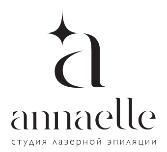
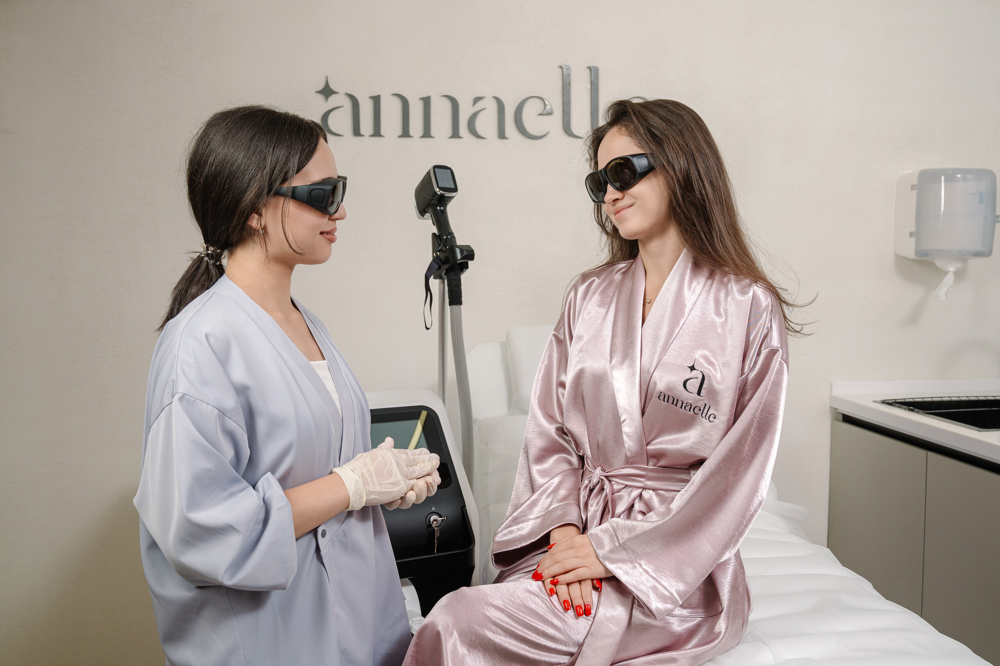

Менеджеры
Менеджеры удалённо обрабатывают обращения, записывают клиентов и обеспечивают доходимость до студии.

ОткликнутьсяОткрытая вакансия · Annaelle
в сеть студий лазерной эпиляции

Сеть студий в Ташкенте09:00–19:00По Ташкенту · час перерыва
Вся работа онлайнПолная занятость · удалённо
Прямое подчинениеГенеральному директору
О компании и вашей роли
Annaelle — сеть студий лазерной эпиляции в Ташкенте в сегменте «доступный премиум».
В Annaelle продажи строятся на экспертности и доверии.
Как устроены продажи
Менеджеры удалённо обрабатывают обращения, записывают клиентов и обеспечивают доходимость до студии.
Продажи услуг студии проходят через мастеров: они проводят экспертную консультацию, рекомендуют подходящий курс и организуют перезапись на следующую процедуру.
Ваши задачи
Что для нас важно
Опыт управления командой продаж от трёх лет.
Обязательный практический опыт работы в Altegio и CRM.
Владение узбекским языком, грамотная устная и письменная речь на русском.
Будет преимуществом
Опыт в лазерной эпиляции, косметологии, фитнесе или других услугах с продажей курсов и абонементов.
По каким результатам оцениваем работу
От первого обращения до повторного визита клиента.
Условия
Бонусная система и совокупный доход обсуждаются на собеседовании.
09:00–19:00 по Ташкенту, включая час перерыва. Удалённая работа, полная занятость.
Все встречи и тренировки менеджеров и мастеров проходят онлайн. Посещение студий для кандидата в Ташкенте — по собственному желанию.
Оформление по договору ГПХ. Испытательный срок — один месяц. Прямое подчинение генеральному директору.
Ваша следующая профессиональная роль
Расскажите об управленческом опыте и одном изменении, которое улучшило продажи.
Частые вопросы
Работа удалённая. Все встречи и тренировки проходят онлайн. Для кандидата в Ташкенте посещение студий — по собственному желанию. Рабочее время — с 09:00 до 19:00 по Ташкенту.
Да, для этой вакансии обязателен практический опыт работы в обеих системах.
Да. Важно владение узбекским языком, а также грамотная устная и письменная речь на русском.
Менеджеров отдела продаж и мастеров-лазерологов сети Annaelle. Менеджеры отвечают за обращения, запись и доходимость. Продажи услуг студии и перезапись проходят через мастеров.
Фиксированная часть — 12 000 000 сум в месяц + бонус KPI. Бонусная система и совокупный доход обсуждаются на собеседовании.
Отправьте резюме и кратко расскажите об опыте управления командой, обучения продажам и работы в Altegio и CRM. Приведите один пример: какой показатель требовал улучшения, что вы изменили и какой результат получили.
Как откликнуться
Отправьте резюме и кратко расскажите об опыте управления командой, обучения продажам и работы в Altegio и CRM.
Какой показатель требовал улучшения, что вы изменили и какой результат получили?